🫁 Asthmatik — 24 icônes (Carte de Paul)
⚠️ En jeu, ne pas afficher la couleur de catégorie sur les icônes (sinon on devine la réponse). Le fond des tokens est volontairement neutre et uniforme.
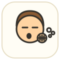
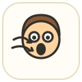
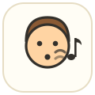
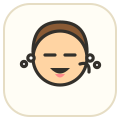
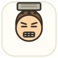
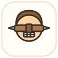
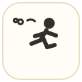
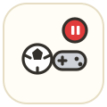
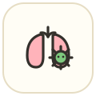
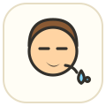
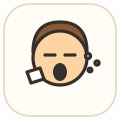
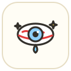
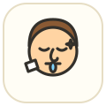
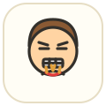
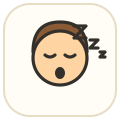
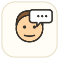
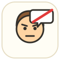
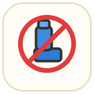
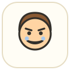
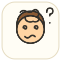
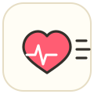
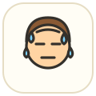
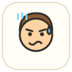
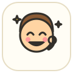